Tkinter es una biblioteca estándar de Python utilizada para crear interfaces gráficas de usuario (GUI). Es una de las bibliotecas más utilizadas para desarrollar aplicaciones de escritorio en Python debido a su simplicidad y eficacia. Tkinter proporciona una amplia gama de widgets como botones, etiquetas, cuadros de texto y más.
Para comenzar, vamos a crear una ventana básica utilizando Tkinter. Esta ventana servirá como la base de nuestra aplicación GUI.
import tkinter as tk
# Crear la ventana principal
ventana = tk.Tk()
# Establecer el título de la ventana
ventana.title("Mi primera aplicación")
# Establecer el tamaño de la ventana
ventana.geometry("400x300")
# Iniciar el bucle principal
ventana.mainloop()
Los widgets son los componentes básicos de una interfaz gráfica. Vamos a añadir algunos widgets básicos a nuestra ventana.
# Crear una etiqueta
etiqueta = tk.Label(ventana, text="Hola, Tkinter!")
etiqueta.pack()
Salida en consola:
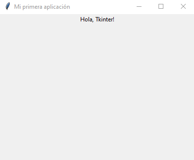
# Crear un botón
boton = tk.Button(ventana, text="Haz clic aquí")
boton.pack()
Salida en consola:
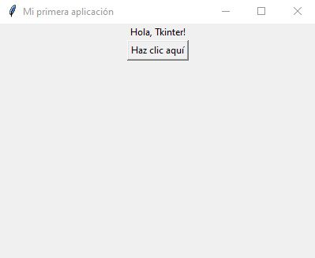
# Crear una entrada de texto
entrada = tk.Entry(ventana)
entrada.pack()
Salida en consola:
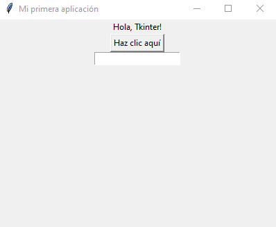Tkinter ofrece tres métodos principales para organizar los widgets en la ventana: pack(), grid() y place().
El método pack() organiza los widgets en bloques antes y después de otros widgets.
etiqueta1 = tk.Label(ventana, text="Etiqueta 1")
etiqueta1.pack(side=tk.TOP)
etiqueta2 = tk.Label(ventana, text="Etiqueta 2")
etiqueta2.pack(side=tk.LEFT)
etiqueta3 = tk.Label(ventana, text="Etiqueta 3")
etiqueta3.pack(side=tk.BOTTOM)
etiqueta4 = tk.Label(ventana, text="Etiqueta 4")
etiqueta4.pack(side=tk.RIGHT)
Salida en consola:
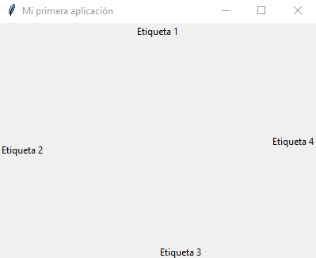El método grid() organiza los widgets en una cuadrícula, permitiéndote especificar la fila y la columna.
etiqueta1 = tk.Label(ventana, text="Etiqueta 1")
etiqueta1.grid(row=0, column=0)
etiqueta2 = tk.Label(ventana, text="Etiqueta 2")
etiqueta2.grid(row=1, column=1)
Salida en consola:
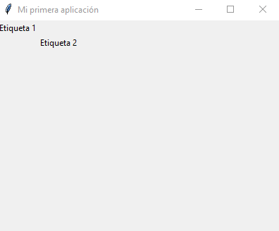El método place() organiza los widgets por coordenadas absolutas.
etiqueta1 = tk.Label(ventana, text="Etiqueta 1")
etiqueta1.place(x=50, y=50)
Salida en consola:
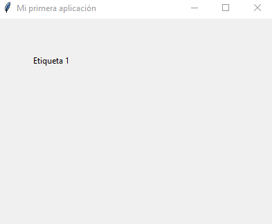Los eventos permiten que tu aplicación responda a las acciones del usuario. Puedes enlazar eventos a widgets específicos.
def cuando_haces_clic():
print("¡Botón clicado!")
boton = tk.Button(ventana, text="Haz clic aquí", command=cuando_haces_clic)
boton.pack()
Salida en consola:
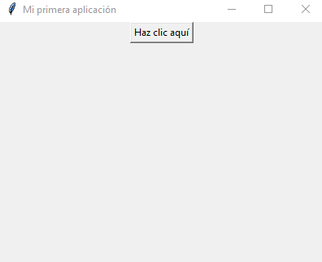Tkinter permite crear menús desplegables para aplicaciones más interactivas. Vamos a ver cómo crear un menú simple.
def hola():
print("Hola!")
# Crear una barra de menú
barra_menu = tk.Menu(ventana)
# Crear un menú desplegable
menu_archivo = tk.Menu(barra_menu, tearoff=0)
menu_archivo.add_command(label="Nuevo", command=hola)
menu_archivo.add_command(label="Abrir", command=hola)
menu_archivo.add_separator()
menu_archivo.add_command(label="Salir", command=ventana.quit)
# Añadir el menú desplegable a la barra de menú
barra_menu.add_cascade(label="Archivo", menu=menu_archivo)
# Configurar la ventana para usar la barra de menú
ventana.config(menu=barra_menu)
Salida en consola:
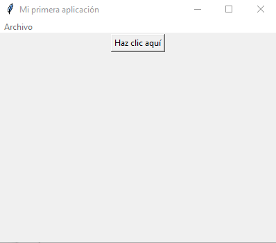 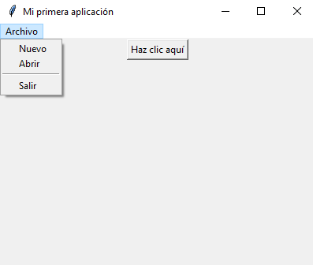Los cuadros de diálogo son ventanas emergentes que se usan para mostrar información, pedir datos al usuario o confirmar acciones. Tkinter ofrece varios tipos de cuadros de diálogo mediante el módulo tkinter.messagebox.
from tkinter import messagebox
def mostrar_mensaje():
messagebox.showinfo("Información", "Esto es un cuadro de diálogo")
boton = tk.Button(ventana, text="Mostrar Mensaje", command=mostrar_mensaje)
boton.pack()
Salida en consola:
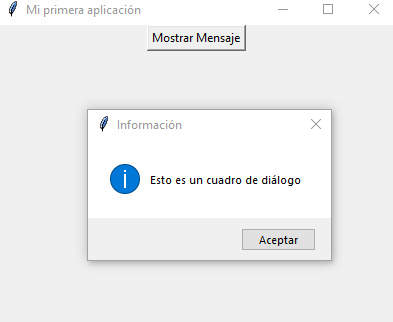Tkinter tiene una amplia variedad de widgets adicionales que puedes utilizar.
var1 = tk.IntVar()
var2 = tk.IntVar()
check1 = tk.Checkbutton(ventana, text="Opción 1", variable=var1)
check2 = tk.Checkbutton(ventana, text="Opción 2", variable=var2)
check1.pack()
check2.pack()
Salida en consola:
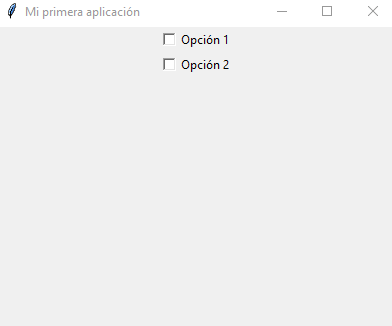
def seleccionar():
print(f"Seleccionaste la opción {opcion.get()}")
opcion = tk.StringVar()
opcion.set("1")
radio1 = tk.Radiobutton(ventana, text="Opción 1", variable=opcion, value="1", command=seleccionar)
radio2 = tk.Radiobutton(ventana, text="Opción 2", variable=opcion, value="2", command=seleccionar)
radio1.pack()
radio2.pack()
Salida en consola:
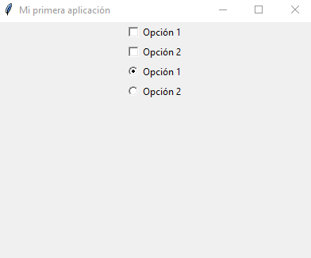
listbox = tk.Listbox(ventana)
listbox.insert(1, "Elemento 1")
listbox.insert(2, "Elemento 2")
listbox.insert(3, "Elemento 3")
listbox.pack()
Salida en consola:
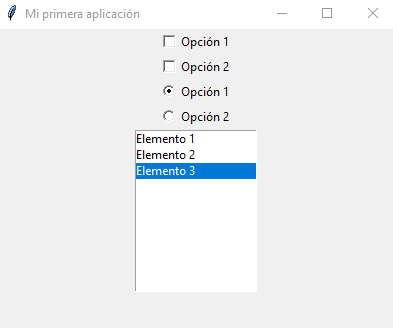El widget Canvas permite dibujar formas y gráficos personalizados en tu aplicación.
canvas = tk.Canvas(ventana, width=300, height=200)
canvas.pack()
# Dibujar un rectángulo
canvas.create_rectangle(50, 50, 250, 150, fill="blue")
# Dibujar un óvalo
canvas.create_oval(75, 75, 225, 125, fill="red")
Salida en consola:
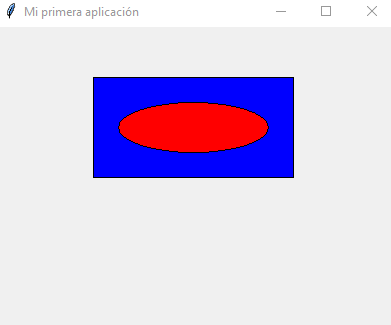Puedes utilizar Tkinter para abrir y guardar archivos mediante cuadros de diálogo de archivos.
from tkinter import filedialog
def abrir_archivo():
archivo = filedialog.askopenfilename()
if archivo:
with open(archivo, "r") as file:
print(file.read())
boton_abrir = tk.Button(ventana, text="Abrir Archivo", command=abrir_archivo)
boton_abrir.pack()
Salida en consola:
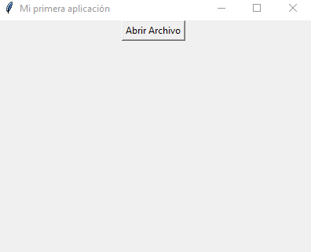El widget Scrollbar permite añadir barras de desplazamiento a otros widgets como Listbox, Text, Canvas, etc.
scrollbar = tk.Scrollbar(ventana)
listbox = tk.Listbox(ventana, yscrollcommand=scrollbar.set)
for i in range(100):
listbox.insert(tk.END, f"Elemento {i+1}")
scrollbar.config(command=listbox.yview)
listbox.pack(side=tk.LEFT, fill=tk.BOTH, expand=True)
scrollbar.pack(side=tk.RIGHT, fill=tk.Y)
ventana.mainloop()
Salida en consola:
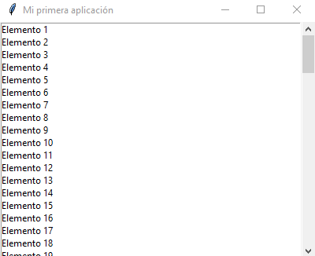El widget Text permite la entrada y edición de texto en múltiples líneas.
# Crear un widget Text
texto = tk.Text(ventana, height=10, width=30)
texto.pack()
# Insertar texto inicial
texto.insert(tk.END, "Escribe algo aquí...")
Salida en consola:
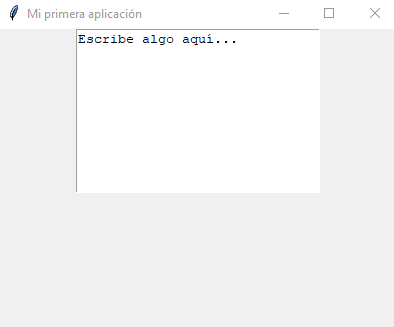El widget Frame se utiliza como un contenedor para agrupar otros widgets. Esto es útil para organizar la interfaz gráfica de manera modular.
# Crear un marco
frame = tk.Frame(ventana, bd=2, relief=tk.SUNKEN)
frame.pack(padx=10, pady=10)
# Añadir widgets al marco
etiqueta = tk.Label(frame, text="Dentro del marco")
etiqueta.pack()
boton = tk.Button(frame, text="Botón en el marco")
boton.pack()
Salida en consola:
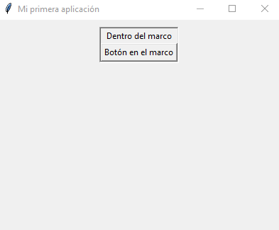El widget PanedWindow permite dividir el área de la ventana en paneles ajustables.
# Crear una PanedWindow horizontal
panedwindow = tk.PanedWindow(ventana, orient=tk.HORIZONTAL)
panedwindow.pack(fill=tk.BOTH, expand=True)
# Añadir paneles
left = tk.Label(panedwindow, text="Panel Izquierdo")
panedwindow.add(left)
right = tk.Label(panedwindow, text="Panel Derecho")
panedwindow.add(right)
ventana.mainloop()
Salida en consola:
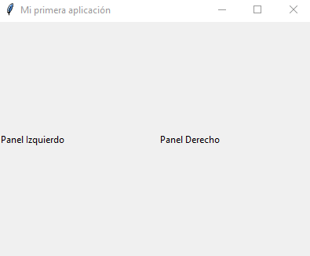Para profundizar en el uso de Tkinter, aquí tienes algunos recursos adicionales: